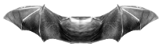
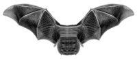
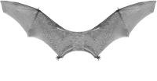
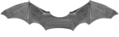
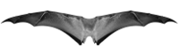
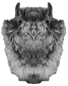

Download the lab
Use the purple button below. The file should appear in your Downloads folder.
↓ World-of-Bats-2026-Linux.zip 0.8 MBACCESS TO BRISTOL · 4 NOVEMBER 2026
Build your own artificially intelligent bat, teach it to hunt with echolocation, and compete to catch the most insects.
MISSION 01
Open a Terminal, then follow the cards in order. Press Enter after each command.
Use the purple button below. The file should appear in your Downloads folder.
↓ World-of-Bats-2026-Linux.zip 0.8 MBOpen Terminal from the applications menu, then run:
cd ~/DownloadsRun these two commands, one line at a time:
unzip -q World-of-Bats-2026-Linux.zip
cd World-of-Bats-2026This can take about a minute. Lots of text on screen is normal.
chmod +x run-on-linux.sh
./run-on-linux.shA new window should open with bats flying over a forest.
python3 WorldOfBats.pyMISSION 02
In BatCave, rename the folder YourBatsName. Use letters and numbers only — no spaces. Then open MyBat.py.
Last four bits = style

0000
0001
0010
0011
01000101self.setWingAppearance("11110100")Last four bits = style
000000010010
001101000101self.setBodyAppearance("10000011")MISSION 03
Colour uses three numbers: red, green, blue. Each can be from 0 to 255.
self.setColour((236, 115, 57))Save with Ctrl + S, then run python3 WorldOfBats.py again.
MISSION 04
Edit only the indented lines under while True:. Your instructions repeat while the bat is flying.
setSpeed(number)Choose a speed from 0.0 (slow) to 1.0 (fast).
turnLeft()Turn a tiny amount to the left.
turnRight()Turn a tiny amount to the right.
ping()Look straight ahead for the nearest insect.
while True:
self.setSpeed(0.8)
result = self.ping()
if result["distance"] == 0:
self.turnLeft()STARTING STRATEGY · Change one thing, run it, watch it, improve it.
ECHLOCATION RETURN
Watch your energy.
Faster flight uses it more quickly. Eating insects restores it.
FINAL MISSION
Copy another team's whole bat folder into your BatCave, restart the world, and press Tab. Which hunting strategy wins — and why?
STUCK?
Leave the message on screen and ask a demonstrator. You have not broken the computer.
Check spelling and capital letters. Type ls to see what is in the current folder.
Run ./run-on-linux.sh again. Show the complete Terminal message to a demonstrator.
Check brackets, quotation marks and indentation. Compare your code with the starting version.
Press Ctrl + S, close the old world with Q, then restart it.
READY TO FLY?